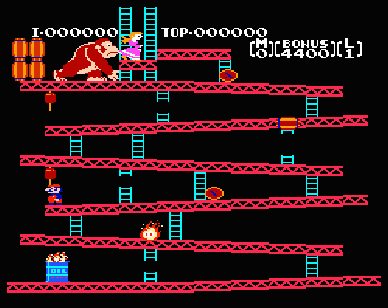
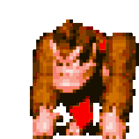
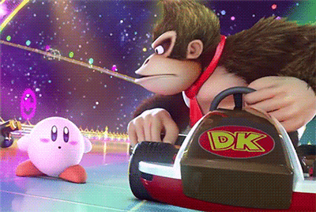
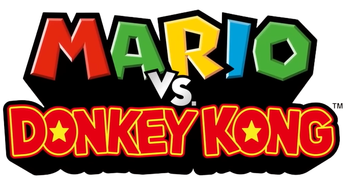

O personagem Donkey Kong foi originalmente concebido como um vilão nos jogos da série Mario. Sua primeira aparição foi no jogo "Donkey Kong" de 1981, onde ele raptava a princesa, papel que mais tarde foi assumido pelo Bowser.

O nome "Donkey Kong" surgiu de um erro de tradução. O criador do jogo, Shigeru Miyamoto, queria chamar o personagem "Monkey Kong" (macaco kong), mas devido a um erro de comunicação com a equipe de localização, acabou sendo chamado de "Donkey Kong" ㅤㅤㅤㅤㅤㅤㅤㅤㅤㅤㅤㅤㅤㅤㅤㅤㅤ(burro kong).

Donkey Kong e outros personagens da série frequentemente fazem aparições em jogos fora de sua franquia, como nas séries Mario Kart e Super Smash Bros.

Donkey Kong teve sua própria série de desenhos animados chamada "Donkey Kong Country," que foi ao ar no final dos anos ㅤ ㅤ90. A série foi inspirada nos jogos de Donkey Kong Country.
Em 2010, a série Donkey Kong passou por um renascimento com o lançamento de "Donkey Kong Country Returns," que revitalizou a franquia com gráficos modernos e jogabilidade desafiadora.

Durante a Nintendo Direct de 2023, a Nintendo anunciou um novo jogo de quebra-cabeças envolvendo seus principais personagens, Mario e Donkey Kong. O jogo, chamado "Mario vs. Donkey Kong," é uma reimaginação da rivalidade clássica entre esses dois personagens e será lançado em 16 de fevereiro de 2024 exclusivamente para Nintendo Switch. A pré-venda já está disponível na loja digital da plataforma. Veja o trailer completo a seguir:
Clique no DK para saber mais:
ㅤ
Desenvolvido por: Henrique Almeida Florentino, 2023 -- Kong WIKI


.gif)